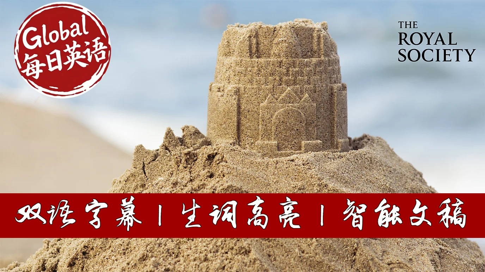

【BBC精选：沙子用完怎么办？｜沙漠里的沙子不能用来建房子】
Summary: In 2008, a Jamaican beach disappeared overnight with 500 truckloads of sand stolen. This incident reveals the global sand theft crisis driven by high demand. Sand forms over millennia, carrying Earth's history through color and composition. It is vital for concrete, glass, and even silicon chips. However, desert sand is unusable for construction, leading to ecological damage from river and coastal mining. Sustainable practices are urgently needed to protect this precious resource.
摘要： 2008年牙买加一处海滩的沙子一夜被盗，揭开了全球沙粒盗窃危机的序幕。沙粒形成需数千年，其颜色和成分记录着地球历史。它是制造混凝土、玻璃乃至硅芯片的关键原料。但沙漠沙因过于光滑无法用于建筑，导致河流与海岸采沙加剧，引发生态灾难。专家呼吁采用可持续方案保护这一濒危资源。

⏱️ Estimated Reading Time: 8 min.
📚 四级生词 📚 六级生词 📚 雅思生词 📚 托福生词 📚 专八生词 📚 SAT生词 📚 考研生词 📚 GRE生词
In 2008, an entire beach and Jamaica vanished.
Five hundred truckloads of glittering white sand was stolen under the cover of darkness and never found.
In fact, sand is being stolen all over the world.
Highlighting how this seemingly plentiful material is now so valuable
that people will go to extraordinary lengths to obtain it.
Sand isn't just the gritty granules that trap between your toes when you're at the beach.
It's a mirror of the earth's history that takes thousands if not millions of years to form.
The colours of sand tell stories of landscapes long gone.
On tropical beaches, sand gleams white, formed from the crushed skeletons of coral and marine life.
Along volcanic shores it turns black, from basalt-born of molten lava.
Red sands carry the tale of ancient iron-rich rocks oxidised over time.
And it's not just what sands made of, it's also what can live in it.
The Macher sand dunes in Scotland are home to hundreds of plants and animals and show just how vibrant and full of life sand can be.
Like tree rings, the layers of a sand dune tell its history.
In the Narmib desert, scientists use optical luminescence to reveal the sand's age,
calculating the last time it saw sunlight.
In Utah, petrified Jurassic dunes formed 180 million years ago are hardened into a magnificent alien landscape.
Sand exhibits mysterious and unusual physics.
In the Sahara, singing sand dunes produce a haunting home heard for kilometres.
This phenomenon occurs when a disturbance like a small avalanche sets the dune vibrating like a plucked cello string.
28 million years ago a meteor struck the Libyan desert sand
and out of the intense forces forged one of the rarest materials.
Libyan desert glass.
So rare and prized, it sits in the centre of Tutankhamans breastplate carved as a golden scarab.
Sand's versatility as a building material was understood by the Romans.
They figured out how to make sand with lime and volcanic ash to create concrete.
An invention that's literally stood the test of time.
The Romans constructed fast networks of roads, aqueducts and structures whose remains have survived for two millennia.
The Pantheon in Rome has the world's largest unreinforced concrete dome.
Four thousand years ago in ancient Mesopotamia,
humans first crafted glass using a simple mixture of sand, lime and soda.
Heated then rapidly called.
Today it's in the windows we peer through the screens we touch
and the fiber optic cables that carry our thoughts close to the speed of light.
Silicon chips, the brains behind everything from smartphones to space shuttles are also made from precious quartz sand.
We're literally surfing the internet on sand particles.
It's hard to imagine our world running out of sand when we have deserts like the Sahara covering 8% of the planet and totaling over 9 million square kilometres.
But desert sand, with its smooth rounded grains shaped by wind, is useless in construction.
It's like trying to build with marbles.
Instead, the world's insatiable need for concrete buildings, bridges and motorways
demands sand from rivers and coastlines which has angular grains that lock together like a jigsaw puzzle.
And this usable sand is running out.
Mining sand from rivers and coastlines disrupts ecosystems and threaten species that depend on those sediments.
Sand flows down rivers protecting shorelines, builds deltas and helps prevent flooding.
When too much is taken, a chain reaction is set off leading to severe floods and erosion,
making us more vulnerable to nature's forces and scarcity leads to crime.
And parts of the world so call sand marfias, illegal mining gangs.
Dredge for sand so intensely that it's causing riverbanks to collapse, destroying villages.
Those who oppose that often face violent retaliation.
Sand has become a commodity so valuable that people are willing to kill for it.
Today, concrete is the most common building material on the planet.
If it were a country, it would rank among the world's top carbon emitters.
If we were to embrace more sustainable building practices based on local materials and conditions,
sand could be preserved for essential purposes and protected from over extraction.
Vulnerable rivers and dunes could also be protected using cattle or sheep to naturally manage vegetation,
shift sand and boost biodiversity, or by planting natural barriers like mangroves to shield coastlines.
So the next time you're walking on a beach, take a moment to feel the sand under your feet.
You're standing on one of humanity's most prized resources.
The remains of ancient ecosystems, and perhaps even the stuff that powers your smartphone.
These tiny grains of sand are our history, sure, but they're also our future.